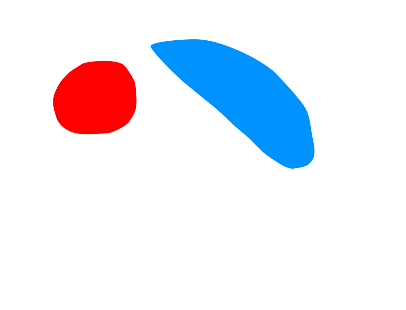
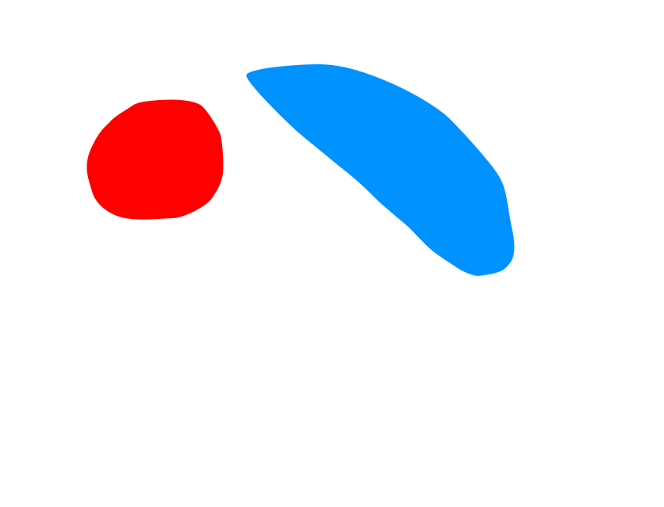
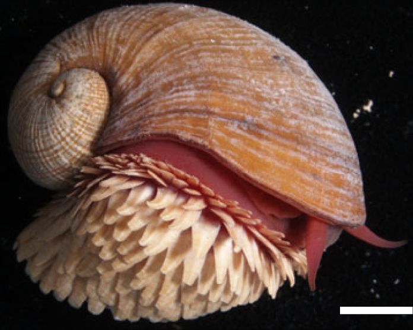

Chrysomallon squamiferum:
The scaly-foot snail
Final project for Deep Sea Biology (BIOL 4030), Prof. Heather Olins, Summer 2024, Boston College
To my peer reviewers: please view this webpage in a separate tab, and please take a look at the Google Doc writeup here.
Chrysomallon squamiferum or the scaly-foot snail is a gastropod found at hydrothermal vents on the ocean floor. What makes it so unique are the overlapping (“imbricating”) scales or sclerites on its foot, which are novel structures evolutionarily unrelated to the gastropod operculum or the superficially similar sclerites of chitons (Chen et al. 2015). Moreover, the C. squamiferum sclerites are composed of iron sulfides—greigite and pyrite (“fool’s gold”)—which makes the scaly-foot snail the only known animal to carry out biomineralization using sulfur instead of oxygen (Okada et al. 2019). This is one snail.
The scaly foot snail is also notable in that it relies on a symbiotic relationship with bacteria for nutrition. On the ocean bottom, there are only a few sources of energy including scarce amounts of food that sinks from above and hydrothermal vents around the mid-ocean ridges. The scaly-foot snail hosts chemosynthetic bacteria—bacteria capable of deriving energy from the toxic chemical soup from hydrothermal vents to make organic molecules—within the cells lining its esophageal pouch, with modifications to its anatomy to better deliver molecular ingredients to its endosymbionts.
On this webpage, you’ll find some of the coolest details that I’ve found this semester about the scaly-foot snail, delivered in a “scrollytelling” format. Just scroll down to see the figures change!
Keep scrolling to learn about some of the scaly-foot snail's amazing anatomical features.
 

This is a scaly-foot snail from the Kairei hydrothermal vent field (Nakamura et al. 2012) in the Indian Ocean. Though it's only about 4.5 cm (almost 2 inches) in length, it is gigantic for Peltospiridae, the family of deep-sea snails to which it belongs—most Peltospirids reach only about 1–1.5 cm in length. This represents a 10–50 fold increase in body volume (Chen et al. 2017)!
Perhaps the most distinctive feature of the scaly-foot snail is the armor-like sclerites covering its foot. As mentioned, they are composed of iron sulfides, making the scaly-foot snail the only known organism to use sulfur instead of oxygen for biomineralization. The sclerites are constructed by the controlled extrusion of disulfide anions through microscopic channels in the calcium carbonate underlayer of the sclerite—the disulfide anions meet iron cations at the surface of the sclerite, and form an iron sulfide layer (Okada et al. 2019).
The shell of the scaly-foot snail comes in a novel triple-layer structure. It has a rigid aragonite inner layer and a proteinaceous periostracum layer on top like most shelled molluscs, but the periostracum is exceedingly thick and, like the sclerites, covered by an iron sulfide outer layer. This triple-layer construction gives the shell of the scaly-foot snail a unique resilience, with the thick, elastic periostracum layer stopping any stress fractures (e.g. from a crab) on the iron sulfide layer from spreading to the inner aragonite layer (Yao et al. 2010).
The nervous system of the scaly-foot snail is large but reduced in complexity in comparison to other gastropods in its order (Neomphalida). It has no clear structure, with no brain or ganglia (discrete units of neurons separated by regions without any cells), nor eyes or any other obvious sensory nervous structures on its head—the only notable sensory organ is the pair of statocysts, or balance organs, embedded in its body (Chen et al. 2015). The scaly-foot snail is big, robust, but dumb, kind of like the Hulk!
The scaly-foot snail has a gill (“ctenidium”) that covers much of the space in its shell, and an enormous heart that would be approximately the size of our heads in human scale—Chen et al. (2015) likens it to the “heart of a dragon”! Combined with gigantism, an increased circulatory capacity is commonly observed in chemosymbiotic organisms at hydrothermal vents (Childress & Girguis 2011), and is likely an adaptation to keep the endosymbiont bacteria, who ultimately sustain the snail, well-supplied with chemicals from the vent.
The water column in the ocean can be divided into zones based on the available light levels. The top 200m of the water column is the euphotic zone, in which there is enough sunlight for photosynthesis to occur. From 200m to 1000m is the dysphotic zone, in which there is not enough sunlight for photosynthesis but just enough that some organisms, often with large, modified eyes, can see. Below 1000m is the aphotic zone, which no sunlight reaches at all.
All animals are heterotrophs, meaning they cannot simply ingest inorganic carbon (CO2) and turn it into organic molecules, like glucose, necessary for bodily functions. Instead, they must rely on (i.e. eat) the carbon fixed by primary producers, which are organisms that can convert CO2 into organic molecules.
The vast majority of the organic carbon in the ocean is fixed in the euphotic zone by photoautotrophs like algae and phytoplankton, and travels through the food web to the largest of predators (including us humans, when we enjoy a shrimp cocktail or a tuna sandwich).
As we dive deeper into the water column, the amount of available organic carbon shrinks dramatically. Most of the organic carbon fixed in the euphotic zone is consumed in the euphotic and dysphotic zones, and, in fact, less than 1% of the total carbon fixed in the euphotic zone actually reaches the ocean bottom! This makes the benthos—the ocean floor—an extremely food-starved habitat. So how does the scaly-foot snail make do on the benthos?
The answer is symbiosis with chemoautotrophs! The scaly-foot snail hosts, within the cells of its esophagus, bacteria which can fix CO2 into organic molecules by harnessing the energy from the oxidation of sulfur, abundant in the plumes of hydrothermal vents, rather than sunlight in a process called chemosynthesis.
In exchange for safety from grazers and a guaranteed supply of raw materials in the comfort of the scaly-foot snail’s cells, the bacteria provide sugars, amino acids, and vitamins that the scaly-foot snail cannot produce on its own (Lan et al. 2021), in addition to the disulfide anion needed for the iron sulfide layer of the snail’s shell and sclerites.
A mid-ocean ridge is a seafloor mountain system where magma rises through a crack in the oceanic crust and hardens into dense basalt. Over geologic time, the creation of new oceanic crust at the mid-ocean ridge displaces existing oceanic crust, contributing to plate tectonics.
The Indian Ocean, where the scaly-foot snail is found, is criss-crossed with four mid-ocean ridges: the Carlsberg Ridge, Central Indian Ridge, the South West Indian Ridge, and the South East Indian Ridge.
As seawater percolates into the rock at a mid-ocean ridge, it is heated by the magma below, picks up dissolved minerals like iron, copper, and sulfur, and is expelled in a thick black plume through a hydrothermal vent. The mineral-rich vent plumes sustain chemoautotrophs like the endosymbiotic bacteria of the scaly-foot snail. The Indian Ocean hosts 13 confirmed hydrothermal vents (van der Most et al. 2021).
Scaly-foot snails were first discovered in the Kairei vent field at the Rodrigues Triple Junction in 2001 (Van Dover et al. 2001). Another population was discovered farther north in 2009 at the Solitaire vent field (Nakamura et al. 2012), and to the southwest on the Longqi vent field in 2011 (Chen et al. 2015). This means that only three populations of the scaly-foot snail are known.
The Solitaire vent population is remarkable in that it does not have the typical black iron sulfide armor found at the Kairei and Longqi vents. The absence of an iron sulfide layer is likely due to the fact that the iron concentration at the Solitaire vent field is only 60μM—while it is still double the average iron concentration of the sub-equatorial Indian Ocean (27μM; Chinni et al. 2019), it is still only 1/58th of the concentration at Kairei vent field (Okada et al. 2019)! 
Despite the significantly different appearance of the Solitaire population, genetic studies show that the Kairei and Solitaire populations are genetically indistinct from each other (p = 0.576) but significantly different (p < 0.001) from the far-off Longqi population (Chen et al. 2015). This implies that the scaly-foot snail has a limited dispersal range, further supported by evidence that the scaly-foot snail’s eggs are negatively buoyant (Beedessee 2013), preventing larva from floating long distances to colonize new vents.
This is significant because China and Germany have been granted exploratory licenses to investigate mining Longqi and Kairei vent fields, respectively, for massive sulfide deposits by the U.N. International Seabed Authority. If the Longqi vent population were to be wiped out by the destruction of hydrothermal vents, it is unlikely that larva from other populations could resettle the vent field once the vent stacks recovered (if at all), and the genetic differences may hamper their survival. And the eradication of the Kairei vent population would effectively halve the eastern range of the scaly foot snail. The scaly-foot snail was officially registered as an Endangered Species in 2018 after a successful lobbying effort by Julia Sigwart and Chong Chen, two scientists studying the scaly-foot snail (Sigwart & Chen 2018).

In the last two decades, much of the attention on the scaly-foot snail has been focused on its unique biomineralization.
From studying its anatomy, we now know that it is the only known animal to carry out biomineralization with sulfur, rather than oxygen, and that it carries out such biomineralization by extruding, through microscopic channels, streams of disulfide anions to bind with iron cations to form a layer of iron sulfide on the outside (Okada et al. 2019).
From studying the ecology of the scaly-foot snail, we know that the disulfide anions are produced as byproducts of chemosynthesis from endosymbiotic bacteria (Lan et al. 2021).
Finally, from studying the populations of the scaly-foot snail, we know that environmental concentrations of iron is important. In iron-poor environments like the Solitaire vent field, the scaly-foot snail will not create iron sulfides at all, while the genetically indistinct Kairei population easily creates a layer (Nakamura et al. 2009).
What is still unknown is whether the iron cations come directly from the diffuse flows around the hydrothermal vent, or if it is biologically mediated. Goffredi et al. (2004) suggest that, owing to the abundance of certain types of bacteria on the surface of the sclerites that bacteria mediate the provision of iron cations; Okada et al. (2019) instead offer that the disulfide ions directly come in direct contact with iron cations in the diffuse flow.
This is a small but important step in the synthesis of iron sulfide because, currently, no cost-effective method of synthesizing metal sulfide nanoparticles exists (Yamashita et al. 2023). A method allied with bacteria could potentially be the solution to a cheaper manufacture of solar panels.
The question of whether iron cations are provided passively by the vent plume or actively mediated by bacteria can be answered by comparing iron isotope fractionation patterns—the maintained ratio of iron isotopes—of the surface bacteria, the vent plume, and the iron sulfide layer of the shell and sclerites.
Organisms, especially bacteria, tend to modulate the isotopic ratios in its metabolites (e.g. Kappler et al. 2010), and hydrothermal vents tend to vary in isotope composition even within the same vent field (Nasemann et al. 2018). Therefore, if the iron isotope fractionation of the iron sulfide layer agrees the bacterial iron isotope fractionation and disagrees with the vent plume iron isotope fractionation, then we have evidence to conclude that the introduction of iron cations involves biological mediation in the form of bacteria. A detailed experiment plan is available here.
Yet other unknowns exist, including what the complete life cycle of the scaly-foot snail looks like—we do not know what its larval stages look like, nor how it spread from vent to vent in the first place, though we know that its range is quite limited following genetic studies. Further, we do not know how sensitive it is to temperature, given that it must stay within a narrow range of plume water to feed its endosymbionts, and how environmental toxins, like ones released by deep-sea mining, affect it, given its prodigious circulatory system.
These open questions all require prolonged in situ observation, collection, and documentation, which is made difficult by the fact that HOV and ROV dives are time-limited and contingent on weather conditions. All the more reason to protect the scaly-foot snail until we can answer all these questions... then come up with even more questions!
This page was made with Scrollama.js for the scrollytelling mechanism, Leaflet.js for the dynamic map, and GIMP for all graphics. I relied on this excellent tutorial video [1] for Scrollama.